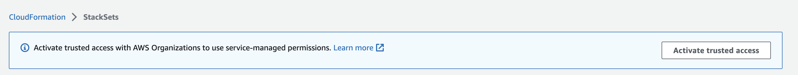

本文為英文版的機器翻譯版本，如內容有任何歧義或不一致之處，概以英文版為準。
啟用使用 AWS Organizations進行受信任存取。
若要設定必要的權限以建立具有自我管理權限的堆疊集，請參閱授與自我管理許可。
建立具有服務受管許可的堆疊集之前，您必須先完成下列任務：
-
啟用中的所有功能 AWS Organizations。如果只啟用合併帳單功能，則無法建立具有服務受管許可的堆疊集。
-
使用啟用受信任的存取 AWS Organizations。啟用受信任存取後，當您建 StackSets 立具有服務管理許可的堆疊集時，在組織的管理帳戶和目標 (成員) 帳戶中建立必要的 IAM 角色。
注意
在管理帳戶中建立的 IAM 服務連結角色具有
CloudFormationStackSetsOrgAdmin字尾。僅當受信任的存取權停用 AWS Organizations 時，您才能修改或刪除此角色。在每個目標帳戶中建立的 IAM 服務連結角色具有CloudFormationStackSetsOrgMember字尾。只有 AWS Organizations 在停用受信任存取權限，或從目標組織或組織單位 (OU) 移除帳戶時，您才可以修改或刪除此角色。
如需使用 API 管理受信任存取的詳細資訊，請參閱：
只有管理帳戶中的帳戶管理員，才具有啟用受信任存取的許可。管理員使用者是具有 AWS 帳戶完整權限的 IAM 使用者。如需詳細資訊，請參閱《IAM 使用者指南》中的 IAM 最佳實務和建立您的第一個 IAM 管理員使用者和群組。
啟用受信任存取後，管理帳戶和委派管理員帳戶可以為其組織建立和管理服務受管的堆疊集。
在建立 StackSet精靈中啟用信任的存取
請參閱 建立具有服務管理許可的堆疊集。
使用 AWS CloudFormation 主控台來啟用受信任存取
-
以管理帳戶 AWS 的管理員身分登入，然後在開啟 AWS CloudFormation 主控台https://console.aws.amazon.com/
。 -
在導覽窗格中，選擇StackSets。如果停用受信任存取，則會顯示橫幅來提示您啟用受信任存取。
 -
選擇啟用受信任存取。
出現下列橫幅時，表示已成功啟用受信任存取。

注意
「啟動 Organizations 存取」與「啟用 Organizations 存取」相同，「停用 Organizations 存取」與「禁用 Organizations 存取」相同。這些條款已根據行銷指導方針更新。
在 AWS Organizations 主控台的 [ AWS 服務的受信任存取權] 頁面中啟動信任的存取
請參閱《AWS Organizations 使用指南》 AWS Organizations中的AWS CloudFormation StackSets 和。
停用受信任存取
請參閱《AWS Organizations 使用指南》 AWS Organizations中的AWS CloudFormation StackSets 和。
您必須先取消註冊所有委派管理員 AWS Organizations，才能停用受信任的存取。如需更多詳細資訊，請參閱 註冊委派管理員。